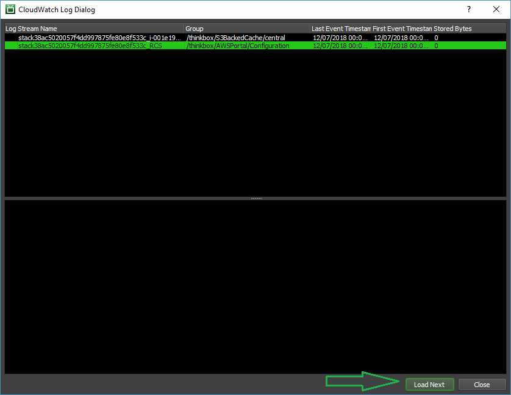
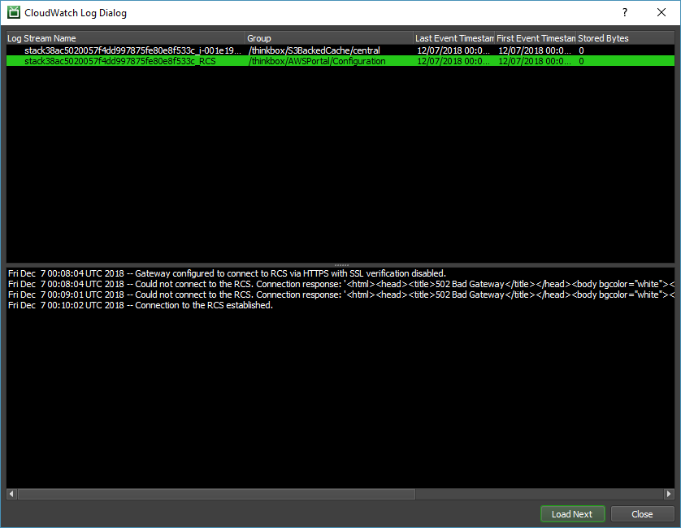

Note
While AWS Portal can enable cloud rendering in Deadline 10, AWS Deadline Cloud is a newer offering that has been built specifically for the cloud. It is a fully managed service that does not require installation or maintenance of infrastructure (e.g., repository, database, or license server). Worker fleet auto-scaling, asset synching, and licensing are all managed natively within AWS by Deadline Cloud. See here for more information on Deadline Cloud and its capabilities.
Verifying Connectivity Between AWS Portal Infrastructure and Your Remote Connection Server¶
Your AWS Portal infrastructure publishes a CloudWatch log that describes its connection configuration, and whether it is able to connect to your Remote Connection Server. To view this log:
- Open your AWS Portal Panel
Enter Power User mode (Tools menu -> Power User Mode).
Create an AWS Panel (View menu -> New Panel -> AWS Portal).
Right-click on your infrastructure and select the View CloudWatch Logs option from the popup menu.

Select the “<stackid>_RCS” stream within the “/thinkbox/AWSPortal/Configuration” group in the list, and click the Load Next button.
You will then see a series of log messages like the following in the lower pane:
This particular log shows an infrastructure that is connecting to a Remote Connection Server (aka: RCS) with TLS enabled but verification of the hostname of the server disabled (“Gateway configured to connect to RCS via HTTPS with SSL verification disabled.”). It was initially unable to connect to the RCS (“Could not connect to the RCS. Connection response: …”), and then was finally able to successfully connect to the RCS (“Connection to the RCS established.”).